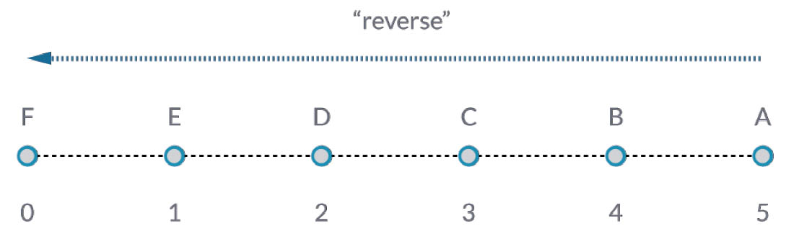
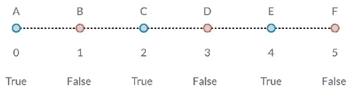

使用清單
現在我們已建立清單，接下來討論可以對清單執行哪些作業。將清單想像為一副紙牌。這副紙牌是清單，而其中每張紙牌都代表一個項目。

相片由 Christian Gidlöf 拍攝
我們可以對清單執行哪些查詢？這將存取既有性質。
- 這副紙牌有多少張？52.
- 有幾種花色？4.
- 用哪種材料製成？紙。
- 長度是多少？3.5" 或 89mm。
- 寬度是多少？2.5" 或 64mm。
我們可以對清單執行哪些動作？這會根據指定的作業變更清單。
- 我們可以重新洗牌。
- 我們可以根據點數對紙牌排序。
- 我們可以根據花色對紙牌排序。
- 我們可以拆分紙牌。
- 我們可以雙手各握一部分紙牌。
- 我們可以選取其中特定的某張牌。
以上列示的所有作業都有類似的 Dynamo 節點，供您使用一般資料的清單。以下課程將展示我們可以對清單執行的一些基本作業。
清單作業
以下影像是我們展示基本清單作業所使用的基準圖表。我們將探究如何管理清單內的資料，並展示視覺結果。
練習 - 清單作業
下載此練習隨附的範例檔案 (按一下右鍵，然後按一下「連結另存為...」)：List-Operations.dyn。附錄中提供範例檔案的完整清單。

- 首先使用值為
500;的 code block；- 插入至 Point.ByCoordinates 節點的 x 輸入。
- 將上一步驟中的節點插入至 Plane.ByOriginNormal 節點的 origin 輸入。
- 使用 Circle.ByPlaneRadius 節點，將上一步驟中的節點插入至 plane 輸入。
- 使用 code block，為 radius 指定值
50;。這是我們將建立的第一個圓。- 使用 Geometry.Translate 節點，在 Z 方向將圓上移 100 個單位。
- 使用 code block 節點，透過以下代碼行定義 0 至 1 之間的一系列十個數字：
0..1..#10;- 將上一步驟中的代碼區塊插入至兩個 Curve.PointAtParameter 節點的 param 輸入。將 Circle.ByPlaneRadius 插入至頂部節點的 curve 輸入，將 Geometry.Translate 插入至下方節點的 curve 輸入。
- 使用 Line.ByStartPointEndPoint，連接兩個 Curve.PointAtParameter 節點。

- Watch3D 節點會顯示 Line.ByStartPointEndPoint 的結果。我們將在兩個圓之間畫線以表示基本清單作業，並使用此基準 Dynamo 圖表完成以下的清單動作。
List.Count

List.Count 節點很簡單：它會對清單中的值進行計數，並傳回該數量。使用清單的清單時，此節點將更為精細，不過我們將在後續章節展示該內容。
練習 - List.Count
下載此練習隨附的範例檔案 (按一下右鍵，然後按一下「連結另存為...」)：List-Count.dyn。附錄中提供範例檔案的完整清單。

- List.Count 節點會傳回 Line.ByStartPointEndPoint 節點中的線數量。在此案例中，該值為 10，這與從原始代碼區塊節點建立的點數量一致。
List.GetItemAtIndex

List.GetItemAtIndex 是對清單中的項目進行查詢的基本方式。在以上影像中，我們使用索引「2」查詢標示為「C」的點。
練習 - List.GetItemAtIndex
下載此練習隨附的範例檔案 (按一下右鍵，然後按一下「連結另存為...」)：List-GetItemAtIndex.dyn。附錄中提供範例檔案的完整清單。

- 使用 List.GetItemAtIndex 節點，我們將選取索引「0」或線清單中的第一個項目。
- Watch3D 節點顯示我們已選取一條線。注意：若要取得以上影像，請確保停用 Line.ByStartPointEndPoint 的預覽。
List.Reverse

List.Reverse 會反轉清單中所有項目的順序。
練習 - List.Reverse
下載此練習隨附的範例檔案 (按一下右鍵，然後按一下「連結另存為...」)：List-Reverse.dyn。附錄中提供範例檔案的完整清單。

- 若要正確顯示反轉的線清單，請將代碼區塊變更為
0..1..#100;以建立更多線- 對其中一個點清單，將 List.Reverse 節點插入至 Curve.PointAtParameter 與 Line.ByStartPointEndPoint 之間。
- Watch3D 節點會顯示兩個不同結果。第一個節點顯示無反轉清單的結果。線垂直連接至相鄰的點。但是，反轉清單會以另一個清單中的相反順序連接所有點。
List.ShiftIndices

List.ShiftIndices 是建立扭轉或螺旋樣式或任何其他類似資料處理的良好工具。此節點會將清單中的項目移位指定數量的索引。
練習 - List.ShiftIndices
下載此練習隨附的範例檔案 (按一下右鍵，然後按一下「連結另存為...」)：List-ShiftIndices.dyn。附錄中提供範例檔案的完整清單。

- 採用對反轉清單的相同程序，將 List.ShiftIndices 插入至 Curve.PointAtParameter 與 Line.ByStartPointEndPoint。
- 使用代碼區塊，指定值「1」將清單移位一個索引。
- 請注意，變更很小，但下方 Watch3D 節點中所有的線在連接至其他組的點時已移位一個索引。

- 透過將代碼區塊變更為較大的值 (例如「30」)，我們注意到對角線有顯著不同。在此範例中，此移位的作用類似於相機的光圈，對原始圓柱形產生了扭轉。
List.FilterByBooleanMask

List.FilterByBooleanMask 將根據一系列布林值或者「True」或「False」值移除某些項目。
練習 - List.FilterByBooleanMask
下載此練習隨附的範例檔案 (按一下右鍵，然後按一下「連結另存為...」)：List-FilterByBooleanMask.dyn。附錄中提供範例檔案的完整清單。

為了建立一系列「True」或「False」值，我們需要多做一些工作...
- 使用code block，採用以下語法定義表示式：
0..List.Count(list);。將 Curve.PointAtParameter 節點連接至 list 輸入。我們將在代碼區塊一章中更詳細地講解此設置，但此範例中的代碼行將產生代表 Curve.PointAtParameter 節點每個索引的清單。- 使用「%」 (模數) 節點，將 code block 的輸出連接至 x 輸入，將值 4 連接至 y 輸入。這會產生索引清單除以 4 時的餘數。模數在建立樣式時是非常有用的節點。4 的所有可能餘數包括：0、1、2、3。
- 從模數節點，我們知道值 0 表示索引可由 4 整除 (0、4、8 等)。使用「==」節點，我們可以測試餘數的值是否為「0」，以測試可整除性。
- Watch 節點顯示此狀況：True/False 樣式為：true,false,false,false...。
- 使用此 True/False 樣式，連接至兩個 List.FilterByBooleanMask 節點的 mask 輸入。
- 將 Curve.PointAtParameter 節點連接至 List.FilterByBooleanMask 的每個 list 輸入。
- Filter.ByBooleanMask 的輸出為 「in」 與 「out」。「in」 表示遮罩值為 「true」 的值，而 「out」 表示遮罩值為 「false」 的值。透過將 「in」 輸出插入至 Line.ByStartPointEndPoint 節點的 startPoint 與 endPoint 輸入，我們已建立經過篩選的線清單。
- Watch3D 節點顯示出線較點更少。我們僅篩選了 True 值，因此僅選取了 25% 的節點。